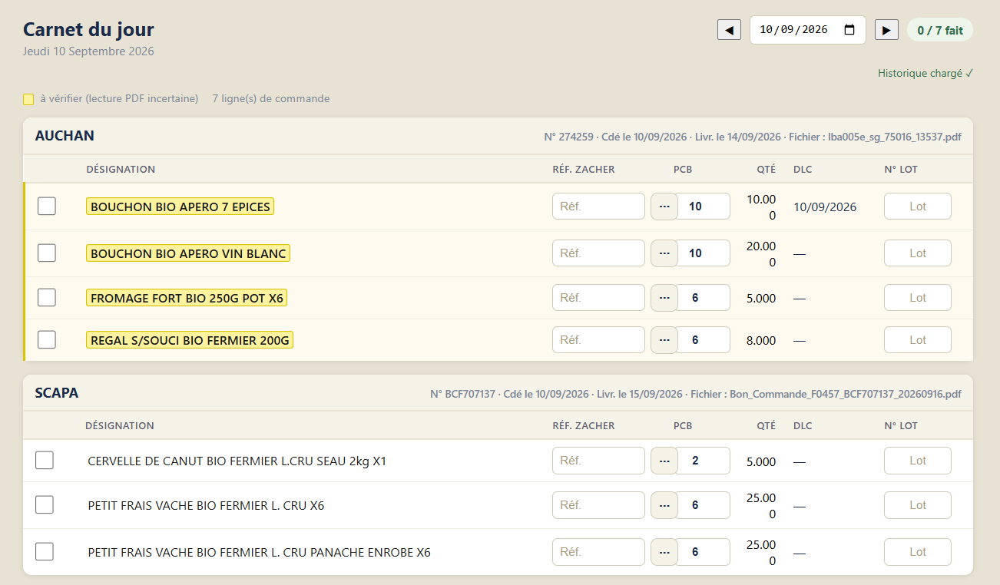
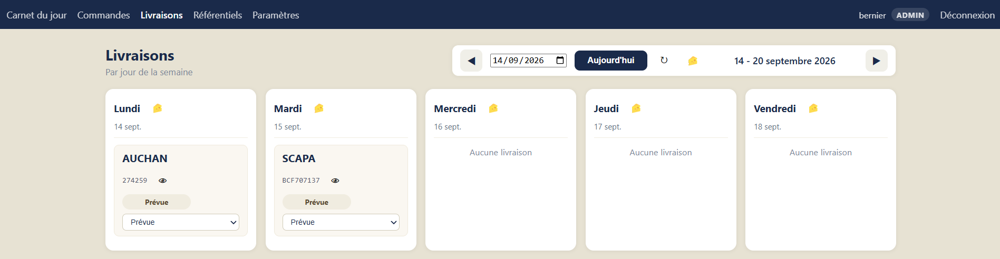

À quoi sert l’application ?
- Centraliser les commandes clients dans un seul outil.
- Aider à préparer les commandes du jour.
- Suivre les livraisons prévues par jour.
- Conserver un historique clair des commandes et des produits.
Fromagerie App est une application simple de gestion des commandes, de préparation et de suivi des livraisons pour une fromagerie. Elle permet de gagner du temps, de limiter les erreurs manuelles et de mieux suivre l’activité au quotidien.
Première page à consulter après synchronisation : préparation des commandes, saisie des DLC, numéros de lot et suivi des lignes.
Historique des commandes avec consultation, modification et suivi par période.
Organisation des commandes par jour de livraison pour avoir une vision simple de la semaine.
Gestion des clients, produits, tarifs et codes internes.
Réglages de l’application et outils liés à l’import des commandes.
Après la synchronisation, c’est la première page à consulter. Elle permet de voir immédiatement les commandes du jour à préparer et de suivre ligne par ligne l’avancement de la production.

Cet écran donne une vue immédiate de la semaine, jour par jour. C’est la page la plus utile pour piloter l’activité quotidienne : voir qui livrer, quand, et suivre l’avancement.

| Critère | Railway | Scalingo |
|---|---|---|
| Fiabilité | 5 incidents majeurs entre nov. 2025 et mai 2026, dont une panne de 8h ayant rendu les sauvegardes inaccessibles. Aucun SLA contractuel sur Hobby/Pro. | SLA explicite même sur l'offre Starter (98%) et bulletins de sécurité détaillés et réactifs. |
| Sauvegardes | Pas de backup automatique MySQL par défaut : il faut ajouter un service tiers. | Sauvegardes quotidiennes incluses dans tous les forfaits, sans configuration. |
| Accès à la base de données | Accès TCP public direct par défaut, pratique mais base exposée sur Internet. | Base privée par défaut, avec console distante, tunnel chiffré ou accès direct selon le besoin. |
| Conformité et localisation | Hébergement plutôt centré US, support en anglais. | RGPD, HDS, ISO 27001, datacenters à Paris, support en français. |
| Coût pour ce projet | Peut sembler gratuit au départ, mais backups et garanties manquantes reviennent vite dans le coût réel. | Starter (conteneur S + MySQL 512M) : environ 14,40 €/mois, avec une tarification simple et prévisible. |
| Simplicité de démarrage | Avantage net : déploiement quasi zéro-config et nombreux templates communautaires. | Un peu plus de mise en place initiale, mais reste raisonnable. |